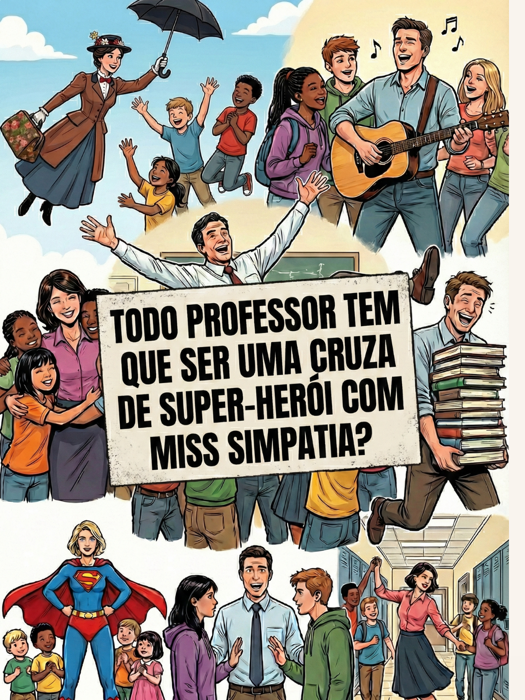
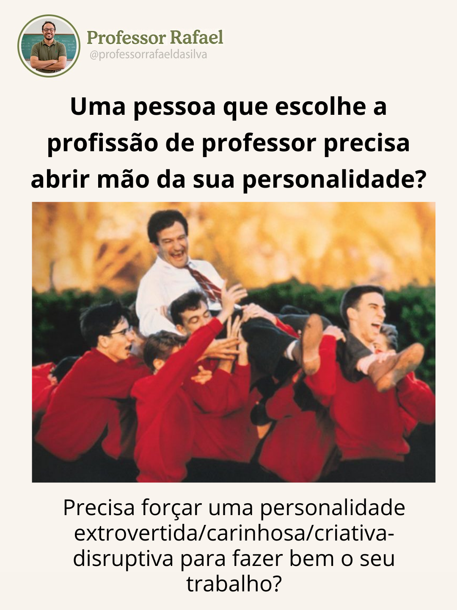
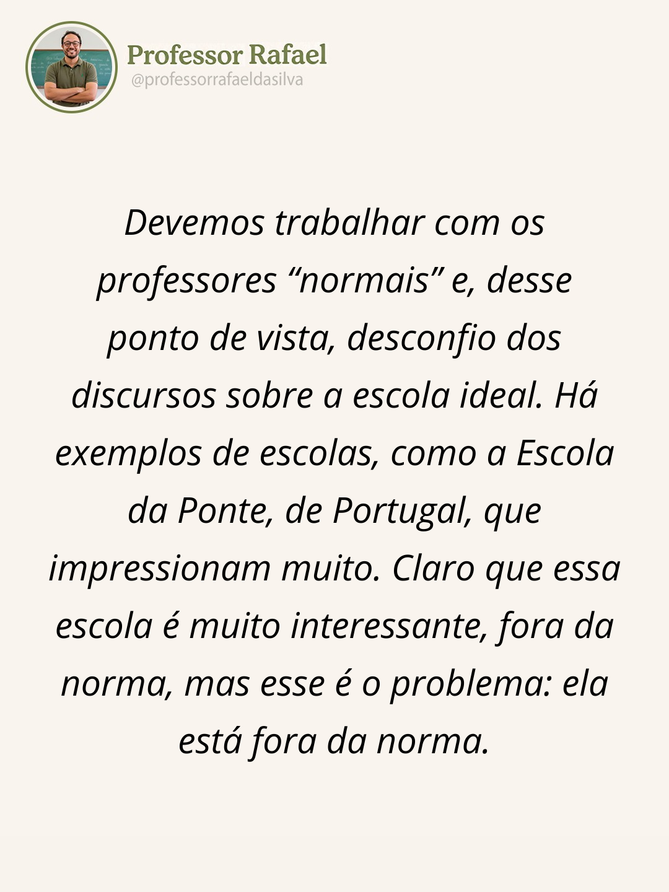
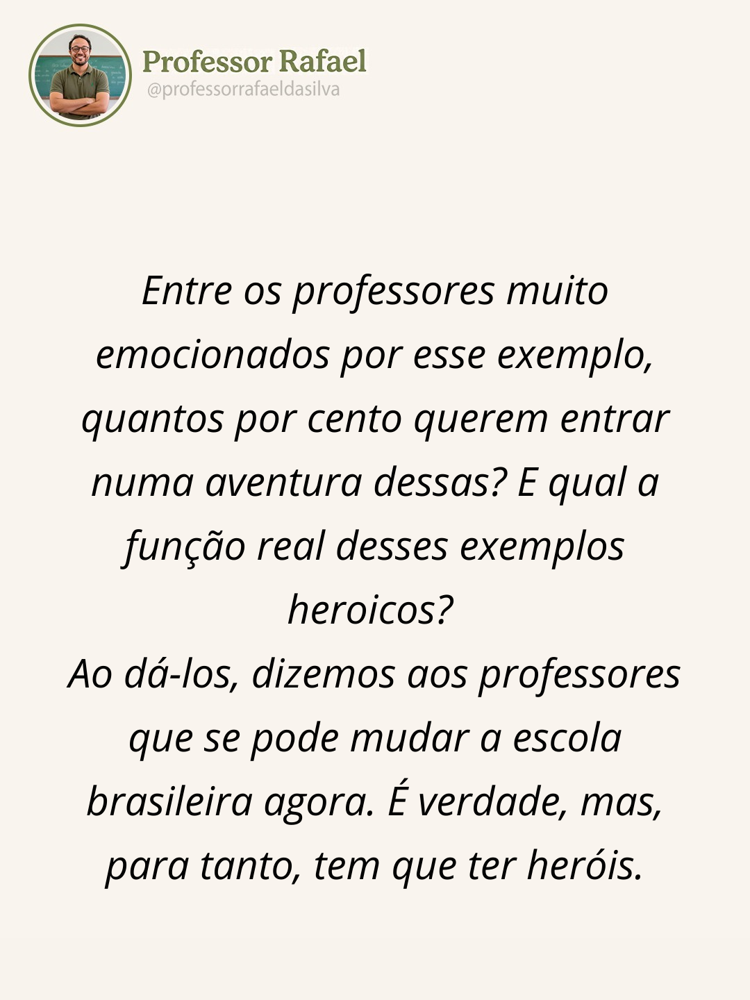
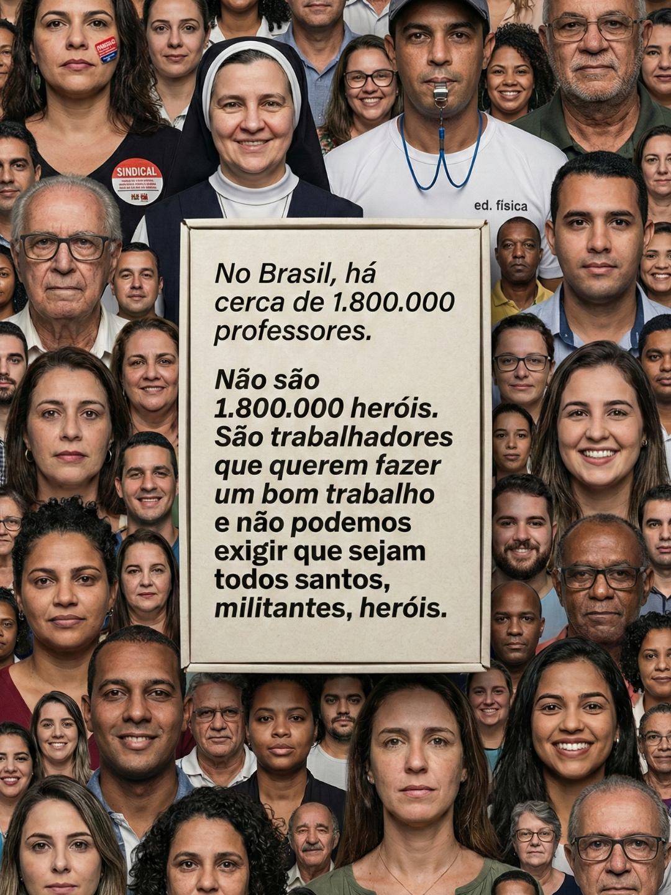
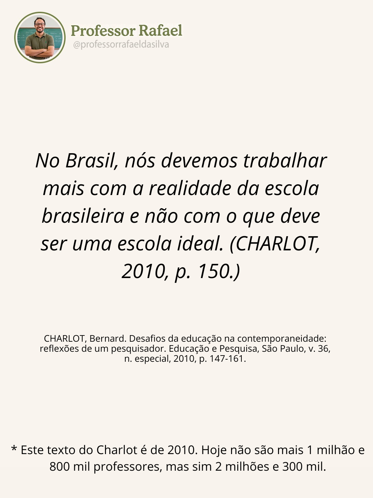
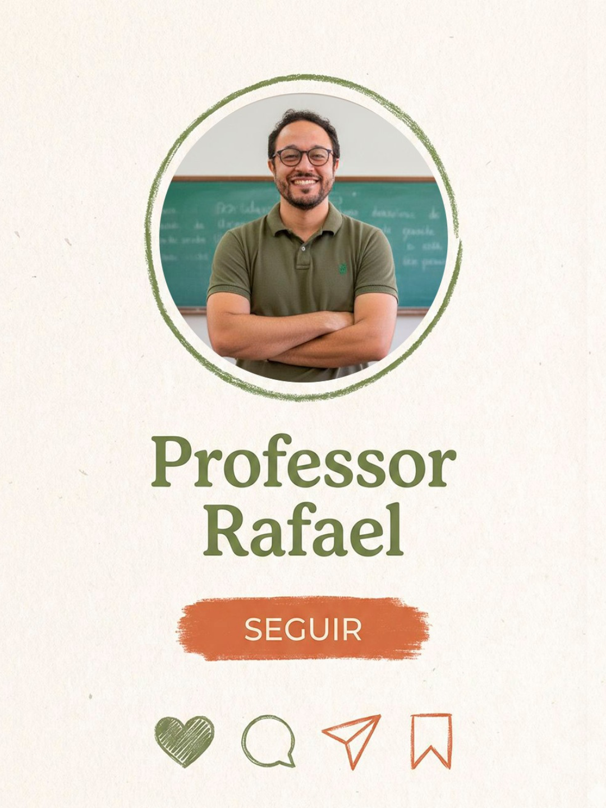
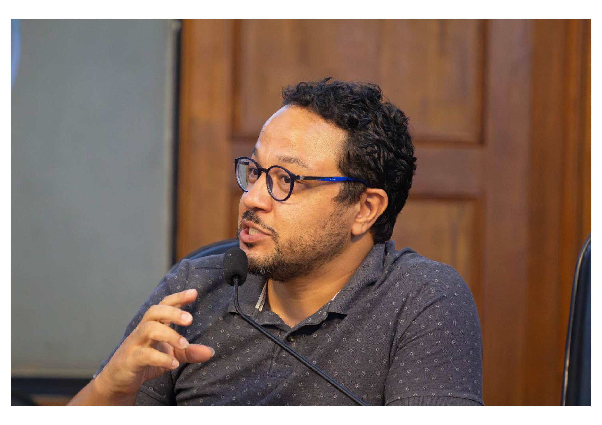

Vou começar analisando os documentos e as imagens que você enviou para entender o projeto antes de fazer perguntas focadas.
Ótimo, li todos os três documentos de estratégia e analisei os 8 cards do carrossel. Antes de partir para o Design System completo, quero fazer algumas perguntas focadas para garantir que a gente construa uma identidade coesa que sirva Instagram, YouTube, e-books e site — não só um post bonito.
O que eu já entendi da marca (me corrige se estiver errado):
Posicionamento: "A voz do professor experiente que traduz a escola real com humor, memória histórica e ferramentas práticas." Não é autoajuda, não é motivação vazia, não é pedagogia idealizada.
Pilares: Autoridade · Humor · Memória histórica · Utilidade · Leveza
Tom: Crítico mas afetuoso, com humor, crível, anti-romantização, didático.
Avaliação do que você já tem (os 8 cards):
👍 Funciona bem:
- A paleta verde-oliva + terracota + off-white tem personalidade. Remete a quadro-negro, papel envelhecido, livro didático — combina com "memória histórica".
- O card de capa (último) com o círculo desenhado à mão e o botão "SEGUIR" com pincelada tem carisma. O traço orgânico ajuda o posicionamento "humano, não corporativo".
- O card #1 (montagem com super-herói, Mary Poppins, Robin Williams) é a melhor peça: é gráfico, provocativo, usa referências culturais — exatamente o tom da marca.
⚠️ Onde vejo problemas:
- Inconsistência tipográfica: os cards alternam entre sem-serifa bold (cards 1, 2) e itálica serifada (cards 4, 5, 7). Falta sistema claro de quando usar cada uma.
- Cards 4, 5 e 7 estão muito "nus" — só texto centralizado sobre fundo bege. Parecem slides de apresentação, não posts de uma marca pessoal. Falta elemento gráfico recorrente.
- A paleta pode ser mais ousada — o verde oliva atual é bonito mas um pouco "seguro/sustentável". Para uma marca com humor e crítica, dá pra ter mais contraste e caráter.
- Falta um "dispositivo visual" recorrente — algo que faça qualquer peça ser reconhecível em 0,5s (ex.: uma textura de giz, um padrão de caderno, uma marcação de caneta vermelha de professor, uma margem de livro didático).
- O avatar circular com @ funciona, mas repetir em todo card ocupa espaço nobre. Pode virar assinatura mais enxuta.
Agora, as perguntas:
Perfeito. Respostas muito claras — especialmente a referência ao Claude da Anthropic. Vou traduzir isso em princípios e me comprometer com uma direção.
Princípios que vou seguir (declarados para manter consistência):
- Humanidade aterrada, não nostalgia. Tom caloroso, orgânico, com traços manuais — mas sem cair em "papel envelhecido/vintage". Tecnologia não é tônica, mas a marca convive com ela tranquilamente.
- Paleta "Anthropic-like": off-whites cremosos, pretos suaves, um acento quente terroso. Saturação baixa e controlada. É o oposto de "tech azul neon".
- Tipografia com caráter editorial, não genérica. Serifa humanista para títulos (autoridade + alma), sans-serif neutra para corrido.
- Dispositivos gráficos recorrentes: marcações de caneta (círculo, sublinhado, seta, grifo marca-texto) + colagem pop no estilo do primeiro card. Humor em 70% significa: a marca sorri o tempo todo, mas não vira meme.
- Rosto do Rafael protagonista: capas, thumbs e aberturas de carrossel usam a foto com tratamento consistente (moldura desenhada à mão, recorte em círculo).
O que vou entregar:
Um canvas único com:
- 3 direções visuais (Conservadora, Intermediária, Arrojada) mostradas lado a lado com os mesmos componentes, para comparação justa
- Em cada direção: paleta, tipografia, logo/monograma, dispositivos gráficos
- Templates de aplicação para a direção que eu recomendo como principal: carrossel Instagram (capa, conteúdo, citação, CTA), story/reel cover, thumbnail YouTube, banner do canal, capa de e-book, hero do site, assinatura LinkedIn, slide de palestra
Vou montar agora. Começo pela estrutura e pelos tokens; depois os componentes.
Agora vou construir os arquivos. Começo pelos tokens (CSS), depois componentes JSX organizados, depois o canvas principal.
Agora os componentes atômicos — marcações de caneta SVG (os dispositivos gráficos que vão recorrer na marca):
Agora os componentes básicos da marca: avatar com moldura, selos tipográficos, logos e placeholder de foto.
Agora os componentes do guia de marca: swatches de cor, cards de tipografia, e cards de direção visual que comparam as três opções. Vou fazer isso com um wrapper ThemeScope que lê variáveis CSS de cada direção:
Agora os cards de carrossel do Instagram — que comparam visualmente as 3 direções usando os mesmos conteúdos (os cards originais do Rafael como base):
Agora vou criar os outros formatos: YouTube, e-book, site, slide e LinkedIn:
Agora vou montar o arquivo principal que junta tudo: o guia de marca com as três direções lado a lado + as aplicações na direção recomendada.
Agora o HTML principal que une tudo no design_canvas:
The issue is DesignCanvas is declared at module level in design-canvas.jsx and const collides when Babel runs it twice or in same scope with the inline script's destructure. Actually the problem: Babel compiles each script, and the inline script has const { DesignCanvas } = window; — that's fine. But the error says "already declared". Likely because const DC in design-canvas.jsx collides. Let me check.
The error is that declaring function DesignCanvas at top-level via Babel creates it in shared scope — reloading or re-compilation across script tags may collide. Actually the real culprit: inline script with const { DesignCanvas } = window; combined with any re-run. Let me just rename it to avoid re-declare issue, or wrap everything in IIFE.
Easier fix: change the inline destructure to use window directly without const binding.
Pronto — o Design System está no ar num canvas navegável, organizado em 10 seções:
01 · Guia de Marca — Essência, princípios visuais, voz (do/don't) 02 · Três direções — Conservadora (A), Intermediária (B, recomendada), Arrojada (C) lado a lado 03 · Sistema recomendado — Paleta, tipografia, dispositivos gráficos, logo/monograma 04–06 · Instagram — Carrossel completo de 6 peças na direção B + comparativos em A e C 07 · YouTube — Thumbs nas 3 direções + banner do canal 08 · E-book — Capa nas 3 direções + miolo (drop cap, callout) 09 · Site — Landing de venda de e-books 10 · Palestra + LinkedIn — Slide 16:9 + header de perfil
Decisões principais (defendidas no guia):
- Paleta: creme #F2EEE4 + tinta #141413 + terra-Claude #D97757 como acento dominante + verde-profundo raro para contraste editorial + mostarda só para grifo marca-texto.
- Tipografia: Fraunces (títulos, alma humanista) + Inter (corrido) + Instrument Serif Italic (citações) + JetBrains Mono (metadados) + Caveat (bilhetinhos raros).
- Dispositivos: uma marcação manual por peça (círculo OU sublinhado OU seta OU grifo) — nunca todas juntas.
Próximos passos que sugiro (cada um exige uma nova rodada):
- Escolha a direção (A, B ou C) e eu recalibro tudo só nela
- Fotos reais do Rafael → troco os placeholders
- Templates de Reels/Stories (agora só os estáticos do feed estão prontos)
- Grid completo do feed (9 posts variados) para ver ritmo visual
- Capas alternativas da "Coleção Escola Real" numeradas



Tenho duas boas fotos (sala de aula e retrato falando). O retrato do violão não copiou por caracteres especiais no nome, mas as duas que funcionaram cobrem bem o uso. Vou:
- Comprometer a marca com a Direção A (verde-oliva + terracota), como você escolheu
- Trocar placeholders de foto pelos retratos reais
- Remover as outras duas direções do arquivo e limpar o guia para focar só em A
Vou ajustar os componentes para usar as fotos reais e focar tudo na Direção A. Começo criando um helper de "Foto" que distribui as 3 imagens pelos contextos.
Agora vou adicionar um componente RafaelPhoto que recebe variante e tamanho, e substituir os placeholders principais (site hero, thumb de YouTube, e-book cover) pelas fotos reais. Também vou comprometer com direção A removendo as comparações B e C e focando só em A. Isso exige reescrever alguns arquivos.
Agora vou substituir placeholders pelas fotos reais em IG, YouTube e site, e refocar o default para direção A:
Agora vou atualizar o card de Charlot (ponte) para usar uma foto real também não se aplica (é outra pessoa). Vou deixar o placeholder do Bernard Charlot como está (é outra pessoa), mas trocar o default theme para A em todos os componentes IG e fazer o arquivo principal focar em A como direção principal.
Agora vou atualizar o theme-scope, o guide, e o arquivo principal para destacar A como a direção escolhida e remover as seções redundantes das direções B/C nas aplicações.
Pronto. Sistema agora focado na Direção A (verde-oliva + terracota), com suas fotos reais integradas no hero do site, thumb do YouTube e cards de carrossel. As direções B e C ficaram como referência comparativa.
Próximos passos sugeridos:
- Grid completo do feed Instagram (9 posts) para testar ritmo
- Templates de Reels/Stories com áreas seguras
- Mais variações de capas da Coleção Escola Real
- Integrar o retrato com violão (não consegui copiar automaticamente — se você re-enviar com nome sem caracteres especiais, uso direto)